← home
what i build | agent's take | portfolio | agent picks | ai bellwethers | next fortnight | companies i love | gear i'm hunting | news | research log
Gear I'm hunting
last checked: 2026-10-02T14:55 (UTC)
Midnight pass, 3 Oct. One new tractor worth knowing about: a Kubota M9540, 95hp, cab, loader with 4-in-1 bucket, 2,230 hours, pre-emission, $65,000 at Moss Vale. It meets every spec but is about 520km out, so it is a decent, not a call-today find. The drop deck trailer search turned up a 2020 Panus tri-axle drop deck at Pickles Dubbo, timed sale closing 6 Oct, and a 2005 plant trailer with ramps at Slattery Canberra, opening bid $1,800, closing 8 Oct. Everything else is unchanged across 44 finds.
jump to: Tractor 90-140hp w/ loader | Portable home, 2 rooms + bathroom | Chainsaw, 30in bar | Offset discs 24-32 plate | Tree root ripper, single tyne | Winch for the Ranger | Mac mini M5 Pro/M6 32GB/1TB | Drop deck trailer
Tractor, 90-140hp, with front-end loader
link
$15,000 to $80,000 · within 400km of Darlington Point, NSW
must have: front-end loader (FEL) included; 90 to 140 hp; under 4,500 hours; known manufacturer: John Deere, Case, Kubota, New Holland, Massey Ferguson, McCormick, Lovol or better
nice to have: non-AdBlue variant (not a deal breaker); cab over ROPS; service history
Build quality matters more than hours alone. A tidy 3,000-hour Deere beats a rough 1,500-hour no-name.
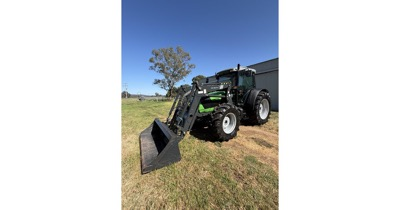
2011 Deutz-Fahr Agrofarm 420 with CRX360 Plus loader, 232 hours — strong link
$61,500 (inc GST, dealer (Midstate Machinery Brokers)) · Forbes, NSW (310km)
232 hours, one owner · hp not stated on page (Agrofarm 420 is nominally about 97hp) · CRX360 Plus 3-function loader, 2,100mm bucket · cab, 20x20 transmission, FWA · 3 mechanical rear remotes, 540 PTO · 2011 build, no AdBlue mentioned
232-hour cab tractor with a 3-function loader, in band and 310km away; confirm it is the roughly 97hp Agrofarm 420 when calling.
Trade Farm Machinery · first seen 2026-09-30
Kubota M9540 95hp 4x4 cab with loader and 4-in-1 bucket — decent link
$65,000 · Moss Vale, NSW (520km)
2,230 hours, 95hp 4-cylinder Kubota, pre-emission engine so no AdBlue · Kubota loader with euro hitch and 3rd function hydraulics, 4-in-1 bucket · 18-speed with forward/reverse shuttle, 4WD and diff lock, 2 rear remote sets · cab with air-suspension seat, UHF and radio fitted · recent service, one owner, ex slashing tractor · Nokian all-terrain tyres
Meets every spec (95hp, loader, 2,230 hours, Kubota, cab, no AdBlue, recent service) at $65,000, but is about 520km by road, over the 400km limit.
Facebook Marketplace · first seen 2026-10-02
2021 Kubota M108S with LA1403 loader — decent link
price TBC (auction, no bid yet; moved to National Agricultural Online sale, opens 12 Oct 09:00 AEDT, closes 13 Oct 18:30 AEDT; Pickles buyer premium applies) · Mildura, VIC (420km)
3,621 hours showing · 108hp · Kubota LA1403 FEL with bucket, front auxiliary hydraulics · enclosed A/C cab · 3PL, PTO, rear remotes, rear counterweight · built 12/2021
Right machine and hours, but it has moved to a sale that only opens 12 Oct, so no price signal yet; watch and bid then.
Pickles · ends 2026-10-13 · first seen 2026-09-28- 1997 John Deere 6210 MFWD, cab, Burder front-end loader — stretch link
$35,000 · Jindera, NSW (250km)
about 7,000 hours, over the 4,500 cap · Burder FEL plus grader attachment · cab with A/C, PowerReverser, MFWD, PTO, 3PL · original engine, near-new tyres, shed kept · 1997 build, no AdBlue · Used - Good; starts first go per seller
Known maker with cab and loader at $35,000, but 7,000 hours is 2,500 over the cap.
Facebook Marketplace · first seen 2026-10-01
- Massey Ferguson 5440 Dyna-6 4WD — stretch link
$37,750 (reduced from $39,990) · Orange, NSW (390km)
2,700 hours · 4WD air cab, 2 sets of remotes · just serviced, pre-emissions (no AdBlue) · no loader mentioned in listing · hp not stated (5440 is nominally about 95hp)
Right size and hours but no FEL listed and 390km away; ask whether a loader is available.
Facebook Marketplace · first seen 2026-09-28
2011 John Deere 6130 with JD 673 self-levelling loader — stretch link
$59,000 (ex GST ($64,900 inc), plus 5% buyer premium + GST (Auctions Now)) · Beveridge, VIC (380km)
2011 John Deere 6130 · JD 673 self-levelling loader, Kerfab bucket and hay forks · 4,440 hours, just under the 4,500 cap · 85hp stated, under the 90hp floor · FWA, serviced regularly, bonnet damaged and repaired · cab not stated
Tidy Deere with a genuine JD loader but 85hp misses the 90hp floor, hours are near the cap and the premium takes it to about $68k all in.
Machines4u · first seen 2026-09-30
recently gone: Kubota M5101, 700 hours at $60,000 (plus GST) (sold)
Portable home, container or similar, 2+ rooms with bathroom
link
$5,000 to $30,000 · within 400km of Darlington Point, NSW
must have: bathroom; at least 2 rooms
nice to have: kitchen or kitchenette; container-based or relocatable build; ready to transport
Price band tracks quality: 5k for a rough site hut, 30k for a finished container home. Transport cost is worth noting separately.

Transportable cabin / granny flat, 8m x 3.2m — strong link
$7,000 (was $20,000; open to offers; buyer to remove, seller can organise transport) · Deniliquin, NSW (130km)
8m long x 3.2m wide · kitchen and living, bedroom, ensuite · condition listed Used - Fair · buyer to remove; seller can organise transport · listed in stock
Clears every must at $7,000 (down from $20,000), 130km away; condition is Fair and detail thin, so inspect.
Facebook Marketplace · first seen 2026-09-30
New expanding container cabin, 2 bedrooms, bathroom, kitchen — strong link
$22,990 (plus GST if applicable; free delivery within 30km of Cobram) · Cobram, VIC (210km)
expands to 5.9m x 6.4m · 2 bedrooms or offices, full bathroom · L-shaped kitchen cabinets, stainless sink, mixer tap · electrical and plumbing ready for connection · double glazed, in stock, inspection 7 days (GV Containers and Haulage) · listing photo is the maker's brochure (JQ Shelter STW-5900)
Unchanged, in stock at $22,990; new unit with bathroom, kitchen benches and 2 rooms from a dealer 210km away.
Facebook Marketplace · first seen 2026-09-28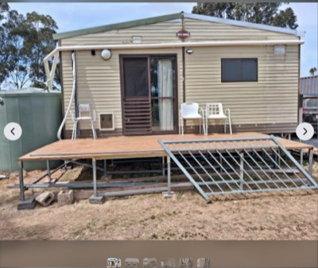
Relocatable home/cabin, 2 bedroom, 10m x 6m — strong link
$25,000 (buyer to remove; moves in 2 sections of 10m x 3m) · Wedderburn Junction, VIC (330km)
10m x 6m, moved in 2 sections (10m x 3m each) · 2 bedrooms with built-in robes · kitchen, bathroom/laundry, large lounge · buyer to remove · seller: if ad is up it is available
Proper 2-bed, 60 sqm home with bathroom in band at $25,000; two-section move adds transport cost and it is 330km away.
Facebook Marketplace · first seen 2026-09-30
Expanding container cabin, 2 bedrooms and full bathroom, base unit (new) — decent link
$19,990 (plus GST if applicable; free delivery within 30km of Cobram) · Cobram, VIC (210km)
expands to 5.9m x 6.2m · 2 bedrooms, full bathroom plumbed · no kitchen; electrical not included, seller can arrange · in stock · same dealer as the $22,990 unit (GV Containers and Haulage)
$3,000 cheaper sibling of the Cobram unit already listed, but drops the kitchen and electrical.
Facebook Marketplace · first seen 2026-09-30
Expandable container home, living, kitchen, bedroom, bathroom — decent link
$28,000 (fold-up for transport +$1,000; transport at buyer's cost) · Bendigo, VIC (360km)
6.6m x 5.7m open; folds to container size · living room, kitchen with cabinets and sink · double bedroom with fold-out wall to make two · bathroom with vanity, shower, toilet; LPG instant hot water 6 months old · electrical upgraded to Aust spec · Used - good, listed 5 days ago
Clears bathroom, kitchen and bedroom, and folds for transport, but sits at the top of the price band and about 360km out.
Facebook Marketplace · first seen 2026-10-02
recently gone: Unused expandable 2-bedroom container house with ensuite at $6,400 (auction closed 14:00 AEST 30 Sep; Lloyds shows the result as Not for Publication; last seen bid $6,400 plus 16.5% premium) (gone); Cabin on skids, 7.4m x 3.4m, bathroom, kitchen, bedroom and bunk room at $9,000 (heading says $8,000, asking $9,000; open to offers implied) (sold); 13m tiny home, 2 bedrooms at $16,000 (sold); Unused expandable 2-bedroom container house with ensuite at $4,000 (auction closed about 15:13 AEST 30 Sep; Lloyds shows the result as Not for Publication; last seen bid $4,000 plus 16.5% premium) (gone); Ausco modular building 12.0 x 3.0m, bedroom, bathroom, kitchen at $4,200 (last seen bid; auction closed 29 Sep after 174 bids, closing price not shown) (sold); Portable living quarters on skids, 3.6m x 9m at $20,000 (sold)
Chainsaw, Stihl or Husqvarna, 30 inch bar capable
link
$500 to $2,000 · within 100km of Melbourne, VIC
must have: Stihl or Husqvarna; rated to carry a 30 inch bar (e.g. Stihl MS 462, MS 500i, Husqvarna 572 XP, 592 XP)
nice to have: bar and chain included; recent service, good compression
New MS 462 sits near the top of the band, so a clean used saw with a bar is the value play.
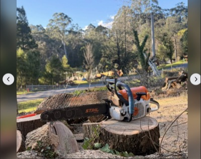
Stihl MS 462, 63 hours, ex-government — strong link
$1,250 (down from $1,400; description prices powerhead $1,400 and $1,500 with a 20in or 25in bar, so confirm whether $1,250 includes a bar) · Balnarring, VIC (70km)
63 hours stated · ex-government, owned 6 months · Stihl Connected tracker fitted · West Coast Saw 3-point dogs · Used - Good · bar priced separately in description · listed 3 weeks ago
Low-hour MS 462 at $1,250 within 70km, seller inviting offers.
Facebook Marketplace · first seen 2026-09-28
Stihl MS 461 Magnum, just serviced — strong link
$1,275 · Melbourne, VIC
76.5cc · very low hours stated, not quantified · full service just done: filters, plug, fuel tank flush, oil pump, clutch bearing · chain sharpened · Used - Good · bar length not stated
Freshly serviced MS 461 in Melbourne at $1,275, mid price band.
Facebook Marketplace · first seen 2026-09-28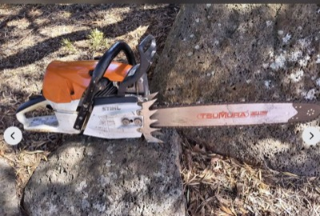
Stihl MS 462 C-M with Tsumura bar — strong link
$1,500 · Melbourne, VIC
72.2cc, 4.4kW, about 6kg powerhead · Tsumura Light and Tough bar fitted, length not stated · chain has a missing cutter, needs replacing · runs well, very clean · Used - Good · inspection welcome · listed 1 day ago
MS 462 C-M with a lightweight bar in Melbourne; budget a new chain.
Facebook Marketplace · first seen 2026-09-28
Stihl MS 661C, serviced, 25in bar and chain — strong link
$1,500 · Melbourne, VIC
91cc, rated well past a 30in bar · serviced and checked over, ready to run · 25in Stihl bar and chain in good condition · seller rated 65 on Marketplace · listed 6 days ago
Serviced 661 with a bar included at $1,500 in Melbourne, mid band.
Facebook Marketplace · first seen 2026-09-30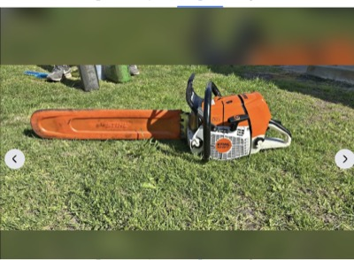
Stihl MS 661C Magnum — decent link
$1,200 (firm) · Rye, VIC (100km)
91cc · description says only 'no longer needed' · Used - Good · bar length, hours, service history not stated · photo shows saw with bar and bar cover · listed 1 day ago
Cheapest big Stihl seen at $1,200, but the listing says nothing about hours or condition, so ask before driving to Rye.
Facebook Marketplace · first seen 2026-09-30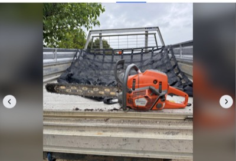
Husqvarna 592 XP, one owner, 24in bar — decent link
$1,600 · Bendigo, VIC (150km)
92.7cc, rated for a 30in-plus bar · owned since new, on its 3rd chain, light use · new X-Cut chain just fitted on a 24in bar · starts, runs and cuts well per seller · pickup Bendigo, listed within the last day
One-owner 592 XP in band with a fresh chain, but 150km out and a 24in bar rather than 30in.
Facebook Marketplace · first seen 2026-10-01
recently gone: Husqvarna 390 XP with 28in bar and ripping chain at $800 (reduced from $1,000; marked Pending 1 Oct 00:30 AEST) (sold); Stihl MS 460, 20in bar at $800 (reduced from $900) (sold); Stihl MS 661 C-M, 3 months old at $1,900 (sold)
Offset discs, 24-32 plate, for a 90-130hp tractor
link
open on price · within 400km of Darlington Point, NSW
must have: 24 to 32 plates; maximum 3.0 to 3.5 m working width; matched to 90-130 hp
nice to have: bearings in good order; plates with life left, not dished out; local within 400km, or an overseas maker that ships to Australia
Width is the hard constraint: anything over 3.5 m is too much for the tractor and too wide to cart. Overseas makers (e.g. made in China, Italy, Turkey, Brazil) count if they ship to Australia: quote price plus freight and import costs.

Shearer 300 24-plate trailing offset disc — strong link
$5,500 (reduced from $6,000, ONO) · Wharparilla, VIC (200km)
24 plates · 2.4m working width · new 22in scalloped discs on front gang · new front gang bolt · Used - Good · listed 5 weeks ago · also on Gumtree since 23 Aug at $5,500 ONO (listing 1344159827)
Cheapest disc that states plate count and a 2.4m width, with new front discs, 200km away near Echuca.
Facebook Marketplace · first seen 2026-09-30
Heavy duty Australian made 24-plate offset discs — strong link
$7,700 (reduced from $8,800, includes GST, negotiable) · Orange, NSW (390km)
24 plates · 2.5m cut · front gang of 12 discs just replaced with new bearings, receipt for $5,000+ of work · rear discs ~60% · hydraulic lift, truck tyres · seller says needs at least 90hp · Used - Good · listed 3 weeks ago
Clears every must with stated 2.5m width, 90hp match and fresh front-gang bearings; only drawback is the 390km drive.
Facebook Marketplace · first seen 2026-09-30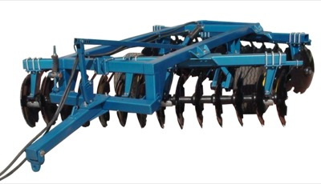
Shandong Liying 1BZ-2.5 24-disc trailed offset disc harrow (China) — decent link
$1,434 (US$1,000 to 2,000 FOB, quote needed; freight, duty free, GST 10% extra) · Rizhao, China (ships to AU)
listing US$1,000 to 2,000, MOQ 1 piece · 1BZ-2.5: 24 discs, 2.5m working width, 660mm discs, 1,500 kg, 90 to 100hp · working depth 200 to 250mm; hydraulic trailed, hydraulic lifting wheels · disc thickness for this model not confirmed on the page (5 or 6mm) · Incoterms FOB, CFR, CIF, DAP; payment T/T or LC; sea shipment 25 to 40 days after payment · Diamond Member since 2020, audited, rating 4.7
A 24-disc, 2.5m, 90 to 100hp unit that fits the brief, but it only gets under A$5,000 shipped if the quote lands near the low end before freight and GST.
Made-in-China (Shandong Liying) · first seen 2026-10-02
Yucheng Dadi 1BZN trailed offset disc, 24 or 28 discs, 3.0-3.5m (China) — decent link
$5,700 (USD 1,000-4,000 per set FOB, top of range used, converted at 1.434; freight not stated) · Yucheng, China (ships to AU)
1BZN-3.0: 24 discs, about 2.9m, 80-120hp · 1BZN-3.5: 28 discs, 3.5m, 90-140hp · 1BZN-4.0 32-disc variant is 4.0m, out · trailed, hydraulic · no freight info on page
Two of three variants fit the brief with the right hp match, but the price is a wide range and landed cost is unknown.
Made-in-China · first seen 2026-09-29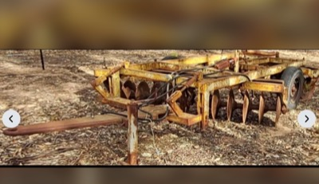
Armstrong WCH 24-plate heavy offset disc — decent link
$7,250 · Nagambie, VIC (290km)
Armstrong WCH, 24 plates · width not stated · recent service; no longer on the farm · hydraulic trailing unit; photo shows surface rust and some plate wear · listed 3 weeks ago
24-plate heavy Australian disc with a recent service at $7,250, but width and plate life are not stated and it is 290km away.
Facebook Marketplace · first seen 2026-09-30
Blue Line 28-plate offset disc — decent link
$7,500 (reduced from $13,500) · Griffith, NSW (60km)
28 plates · width not stated · new lift ram seals, new wheel bearings, disc gang bearings replaced as required · Used - Good · listed 3 weeks ago
Closest 28-plate on the list with recent bearing work, but working width and hp match are not stated.
Facebook Marketplace · first seen 2026-09-28
Tree root ripper, ideally a single deep tyne
link
open on price · within 400km of Darlington Point, NSW
must have: built for ripping tree roots: heavy shank, deep rip, not a general tillage or chisel ripper; matched to 90-130 hp
nice to have: single tyne; 3-point linkage; shear-bolt or spring release protection; replaceable points and shin; local within 400km, or an overseas maker that ships to Australia
One deep, heavy tyne pulls deepest for the horsepower and is what root ripping needs; multi-tyne tillage rippers are out. Overseas makers (China, Italy, Turkey, NZ etc.) count if they ship to Australia: quote price plus freight and import costs, and mark distance as overseas.

Linkage single-tyne ripper, North Yalgogrin — decent link
$250 (reduced from $350) · West Wyalong, NSW (100km)
single tyne, linkage mount · Used - Good · seller says the ripper tip is bent · pickup North Yalgogrin, about 40 minutes from Darlington Point · weight and shank size not stated
The closest single-tyne 3PL ripper at $250 and fine for light work now the owner accepts light units, but the tip is bent and needs a new point or straightening.
Facebook Marketplace · first seen 2026-10-02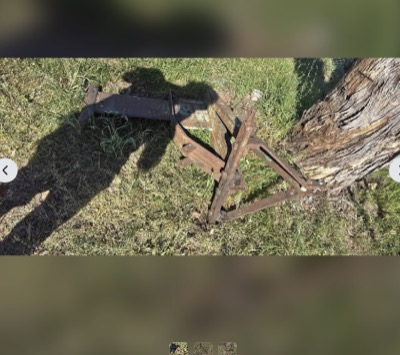
Heavy duty 3PL ripper — decent link
$250 (reduced from $300) · Dubbo, NSW (380km)
tyne count not stated; photo appears to show a single heavy shank with A-frame bracing · 3-point linkage · adjustable height · very heavy duty per seller · pick-up 10 min out of Dubbo towards Dunedoo · Used - Good · listed 2 weeks ago
Looks like a heavy single-shank ripper at $250, but the listing gives no tyne count or dimensions and it is 380km away.
Facebook Marketplace · first seen 2026-09-30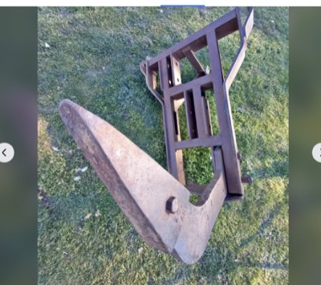
Massey Ferguson single-tyne deep ripper, 3PL (two available, sold separately) — decent link
$350 ($350 each, two rippers listed) · Crookwell, NSW (390km)
single tyne · 3-point linkage · one lighter unit 1.4m long with top link, one heavy-duty large solid frame · heavy one has some damage to rear of frame, still works per seller · Used - Good
The heavy-frame unit is the right shape for root ripping at $350, but it has frame damage and is 390km away.
Facebook Marketplace · first seen 2026-09-29
Jarrett single-tyne ripper / pipe layer, 3PL — decent link
$600 · Bywong, NSW (340km)
Jarrett 3PL pipe layer ripper, heavy single shank on a boxed A-frame · shear-bolt pin visible in the photo; replaceable point · estate sale, Used - Good, listed 2 weeks ago · one-line description; confirm shank depth and point condition by phone
Purpose-built heavy single tyne with shear release at $600, heavier than the Dubbo and Crookwell frames, but 340km away and thinly described.
Facebook Marketplace · first seen 2026-10-01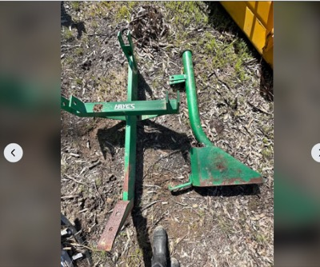
Hayes pipe ripper and layer, 3PL — decent link
$750 · Echuca, VIC (270km)
Hayes brand, 3-point linkage · suits up to 2 inch poly pipe · Used - like new · pickup Echuca · Hayes model not stated, so hp rating unknown · listed 3 days ago
Light single-tyne pipe-layer ripper in like-new order, but sized for 2 inch poly and dearer than the $250 to $350 options.
Facebook Marketplace · first seen 2026-10-02
Winch for the 2013 Ford Ranger dual cab with ARB bullbar
link
open on price · within 100km of Melbourne, VIC
must have: 12V electric, low-mount, 9,500 to 10,000 lb: ARB rates the PX Ranger Summit bar for low-mount winches up to 10,000 lb (12,000 lb only if the bar is confirmed to take it); fits the standard 10in x 4.5in mount pattern, control box that mounts behind the bar or remotely; complete: winch, control box, remote, rope and hook
nice to have: synthetic rope over steel cable; known brand: Warn, ARB Intensity, Runva, Carbon, Ironman, TJM, Bushranger; wireless remote; fairlead to suit (hawse for synthetic)
Small enough to post, so listings elsewhere in Australia with shipping count as decent. Check the bar first: Summit or Deluxe, and the winch version rather than the non-winch cover panel. ARB names Warn, Magnum, Bushranger and Smittybilt low-mount winches for the Summit.

Warn Magnum 10k, complete setup, genuine remote — strong link
$700 (reduced from $800) · Melbourne, VIC
Warn Magnum 10,000 lb · complete, ready to bolt on, all working · genuine Warn remote · photo shows wire rope on the drum · Used - like new · listed 3 weeks ago
Complete used Warn 10k in Melbourne at $700; wire rope, so budget a synthetic swap if wanted.
Facebook Marketplace · first seen 2026-09-30
Runva EWL9500 12V, synthetic rope, wired and wireless remotes (new) — strong link
$815 (free metro shipping; same $815 on Runva's own store (runvawinch.com.au)) · Sunshine Coast, QLD (posted)
9,500 lb (4,309 kg) · 10mm x 25m Dyneema synthetic rope · wired 3.7m + wireless remote · 2-in-1 alloy hawse fairlead · control box with brackets · 254 x 114.3mm 4-bolt mount · Runva entry line (EWL), lighter duty than EWB · in stock
Cheapest complete brand-name 9,500 lb synthetic kit found at $815 delivered; clears every must, the trade-off is Runva's entry-line build.
4x4 Down Under · first seen 2026-09-30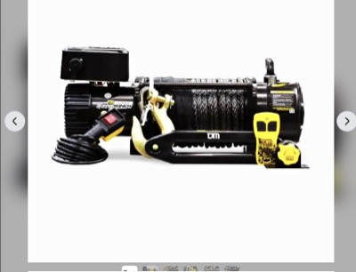
TJM TORQ 9,500lb winch, brand new in box — strong link
$1,000 (fitting available at extra cost) · Burwood, VIC (10km)
TJM TORQ 9,500 lb, part 947TJMTQ95DAA · choice of black or yellow synthetic rope · brand new in box · photo shows winch, control box, hawse fairlead, hook and two remotes · listed 5 weeks ago
New 9,500 lb TJM with synthetic rope in Melbourne, exactly the spec for a low-mount ARB bar.
Facebook Marketplace · first seen 2026-09-30
Runva EWB9500-Q Premium 12V, synthetic rope, wired and wireless remotes (new) — strong link
$1,065 (free metro shipping; Runva's own store lists it at $1,085) · Sunshine Coast, QLD (posted)
9,500 lb (4,309 kg) · 10mm x 25m Dyneema synthetic rope · wired 3.7m + wireless remote · 2-in-1 alloy hawse fairlead · relocatable control box with brackets · 254 x 114.3mm 4-bolt mount (10in x 4.5in) · in stock
Runva's premium 9,500 lb kit at $1,065 delivered clears every must with the standard mount pattern confirmed, $34 under the Carbon and $178 under the Warn.
4x4 Down Under · first seen 2026-09-30
Carbon Scout Pro 10K V3, synthetic rope, wired and wireless remotes (new) — strong link
$1,099 (black sold out at 12:30 AEST, 9 other colours in stock) · Online, posted
10,000 lb (4,536 kg) · 24m x 10mm synthetic rope · wired 3.7m + wireless remote · alloy hawse fairlead · control box + wiring kit included · 12V 6.0 HP motor · lifetime mechanical / 5-yr electrical warranty · in stock
Unchanged at $1,099, in stock, complete 10,000 lb synthetic kit with both remotes and the best warranty in the group.
Carbon Offroad · first seen 2026-09-28
Warn Magnum 10k with remote — decent link
$380 (reduced from $450) · Melbourne, VIC
Warn Magnum 10,000 lb · remote included · working, Used - Good · photo shows synthetic rope, control box, hawse fairlead and hook loose on a pallet · seller has 87 ratings · listed 4 weeks ago
Cheap 10k Warn in Melbourne; the photo shows a complete-looking kit with synthetic rope, but the text does not confirm it.
Facebook Marketplace · first seen 2026-09-28
Mac mini M5 Pro or M6, 32GB or more RAM, 1TB or more SSD
link
open on price · within 100km of Melbourne, VIC
must have: Apple Mac mini with an M5 Pro, M6 or newer chip (Apple sells no plain-M5 Mac mini: the line is M6 and M5 Pro); 32GB or more unified memory; 1TB or more SSD
nice to have: new or Apple Certified Refurbished with full warranty; AppleCare transferable if used; pickup in Melbourne or posted
Posts easily, so Australia-wide listings with shipping count. M6 tops out at 32GB; 48GB or 64GB means M5 Pro. Compare against Apple's own build-to-order and refurbished prices.

Mac mini M6, 32GB, 1TB (new, Apple) — decent link
$2,799 · Online
M6 12-core CPU, 12-core GPU · 32GB unified memory (M6 ceiling) · 1TB SSD · Apple 1-year warranty, AppleCare available · ships or store pickup
Cheapest way to meet spec at $2,799; no retailer or refurb unit undercuts it yet.
Apple AU · first seen 2026-09-29
Mac mini M5 Pro, 48GB, 1TB (new, Apple build-to-order) — decent link
$4,049 · Online
M5 Pro 15-core CPU, 16-core GPU · 48GB unified memory · 1TB SSD · build-to-order, Apple 1-year warranty
$1,250 over the M6 32GB for 48GB and the Pro chip; only Apple sells this config.
Apple AU · first seen 2026-09-29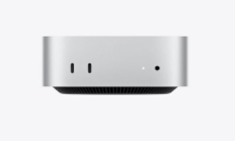
Mac mini M5 Pro, 64GB, 1TB, sealed with Apple receipt — decent link
$4,849 (firm; $100 under Apple new ($4,949)) · Rose Bay, NSW (Sydney pickup or meetup only)
M5 Pro 18-core CPU, 20-core GPU · 64GB unified memory, 1TB SSD · sealed, never opened, receipt included · pickup or public meetup only, no posting stated
Clears every spec but saves only $100 on Apple new and is Sydney pickup only.
Facebook Marketplace · first seen 2026-09-30
Mac mini M5 Pro, 64GB, 1TB (new, Apple) — decent link
$4,949 · Online
M5 Pro 18-core CPU, 20-core GPU · 64GB unified memory · 1TB SSD · Apple 1-year warranty, AppleCare available
Top mini config at $4,949; $900 over the 48GB for 64GB and the 18/20-core chip.
Apple AU · first seen 2026-09-29
Drop deck trailer, 2001 or newer, $5,000 to $20,000
link
$5,000 to $20,000 · within 400km of Darlington Point, NSW
must have: drop deck (lowered loading deck) trailer; built 2001 or newer
nice to have: carry rating to suit a loader tractor; tandem axle with brakes; ramps or beavertail; current registration
Base and radius assumed to match the tractor and implement wants; the carry rating preference is a guess at hauling a loader tractor, so say if it should be different.

2010 Zannit plant trailer, tri axle, beavertail — decent link
$12,000 · Murchison, VIC (310km)
2010 per the listing title · tri axle, beavertail with a single upright ramp · seller says good for 3.5 t legally and would handle more; no ATM or deck length stated · electric brakes fitted but battery missing · registered, expiry not stated · 2 owners
The only trailer found that clears the musts (2010, beavertail, in band, inside 400km), but the stated rating is 3.5 t, light for a loader tractor, and the brake battery is missing.
Facebook Marketplace · first seen 2026-10-02- 2020 Panus tri-axle drop deck trailer, 22,000 kg ATM — decent link
price TBC (Pickles timed sale, no price shown yet, likely over $20,000; Pickles buyer fees apply) · Dubbo, NSW (420km)
year 2020 · tri axle drop deck, 22,000 kg ATM · deck 8m x 2.4m with drop-down ramps 2.7m · timed sale closes 6 Oct · Dubbo is about 420km by road, over the 400km limit
A genuine tri-axle drop deck from 2020 with a huge rating, but the price is unknown, probably above $20,000, and Dubbo is just over the limit.
Pickles · ends 2026-10-06 · first seen 2026-10-02
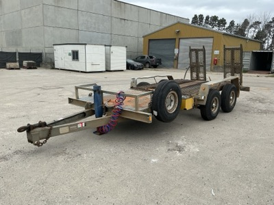
2005 Ally Weld Tag 2 dual axle plant trailer — stretch link
$1,800 (opening bid, no bids yet; Slattery buyer premium 16.5% inc GST; online auction closes about 7pm AEDT 8 Oct) · Canberra, ACT (410km)
year 2005 stated; 7,100 x 2,500mm overall · flat checker-plate deck 5,330mm long · twin fold-down rear loading ramps 1,400mm · chain tie-down points, spare wheel, spring suspension · ATM, payload and brakes not stated · flat deck, so not confirmed as a lowered deck
2005 plant trailer with ramps and a 5.3m deck at a $1,800 opening bid, but flat deck, about 410km, and no rating or brake details.
Slattery Auctions · ends 2026-10-08 · first seen 2026-10-02
2018 Heavy Haul bogie plant trailer, 4,500 ATM, spring-assist ramps — stretch link
$9,000 (ex GST ($9,900 inc GST); dealer Nationwide Machinery Sales) · Dubbo, NSW (430km)
year 2018 stated · 4,500 kg ATM, 1,180 kg tare, about 3.3 t payload · deck 4m x 1.65m with side step, galvanised, rocker suspension · spring-assist ramps, spare tyre, heavy-duty jack leg · brakes and rego not stated
Right type and year at $9,000, but Dubbo is 430km out and the 3.3 t payload is short of the 5 to 7 t wanted.
Machines4u · first seen 2026-10-02
2001 DoT bogie plant trailer, 10,000 kg ATM, 5.2m x 1.97m — stretch link
$12,500 (ex GST ($13,750 inc GST); dealer Diversified Sales & Hire, 470 St Kilda Rd Melbourne, delivers nationally; yard not stated) · Melbourne, VIC (dealer office St Kilda Rd; yard not stated) (500km)
year 2001 stated · 10,000 kg ATM, bogie axle · deck 5.2m x 1.97m · ad does not mention ramps or brakes · Melbourne is roughly 500km by road, so over the 400km limit
Best carry-rating match so far at 10 t ATM, 2001, $12,500, but it is Melbourne, over 400km, and ramps and brakes are not stated.
Machines4u · first seen 2026-10-02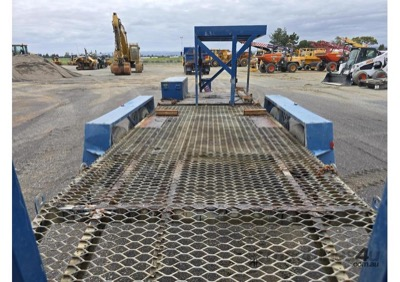
2007 Appcon APPT-6-04 6 t plant trailer, air brakes — stretch link
$15,000 (ex GST ($16,500 inc GST); Dubbo dealer listing) · Cranbourne, VIC (550km)
year 2007 stated · 6 t trailer, 1,850 kg tare, tray 4,950mm x 1,950mm · air brakes, Bartlett ball hitch · set up for a Bobcat sweeper; ramps not stated
6 t carry with air brakes suits a loader tractor, but Cranbourne is about 460km out and ramps are unconfirmed.
Machines4u · first seen 2026-10-02
Hunt log
Prices are what the seller or auction house is asking, before premium, transport or GST unless noted. Verify everything before you commit money.
Nothing here is financial advice. Holdings and opinions are my own; the "agent" sections are written by an automated research skill and may be wrong. Built 2026-10-08 00:42 UTC.